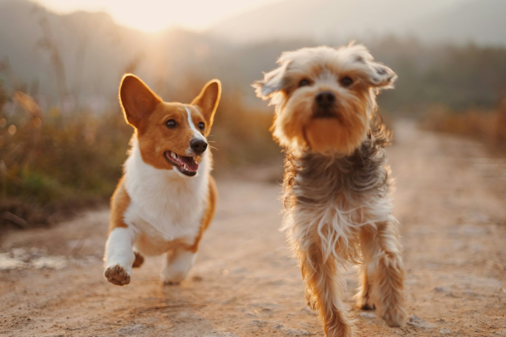
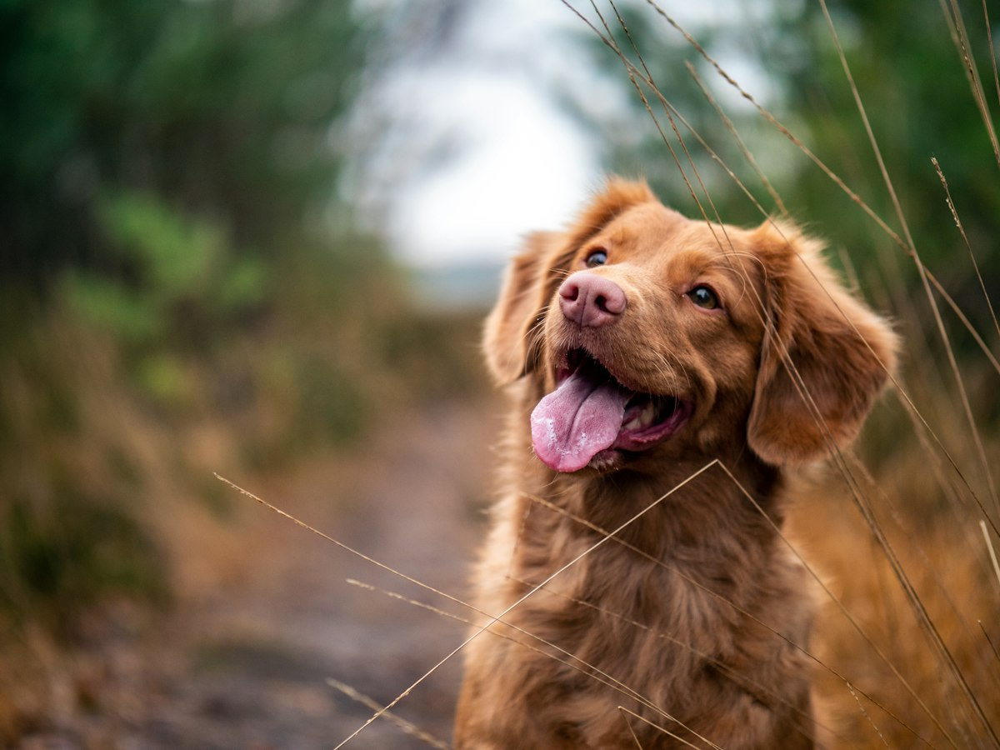
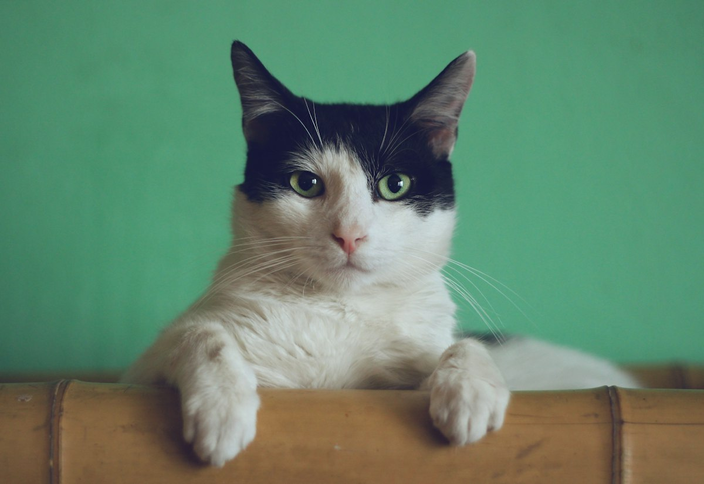
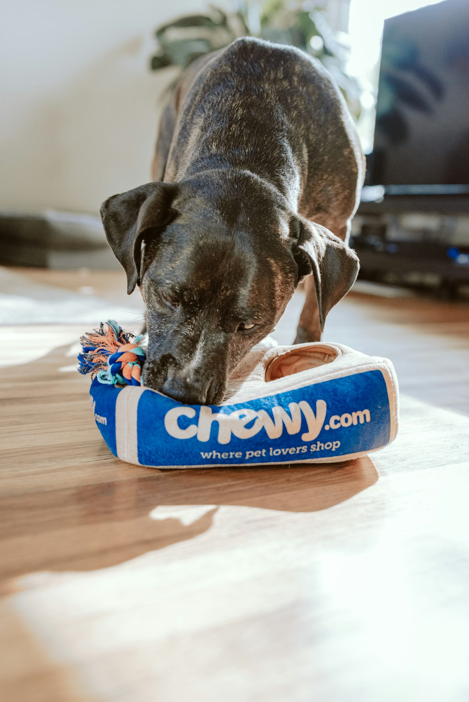
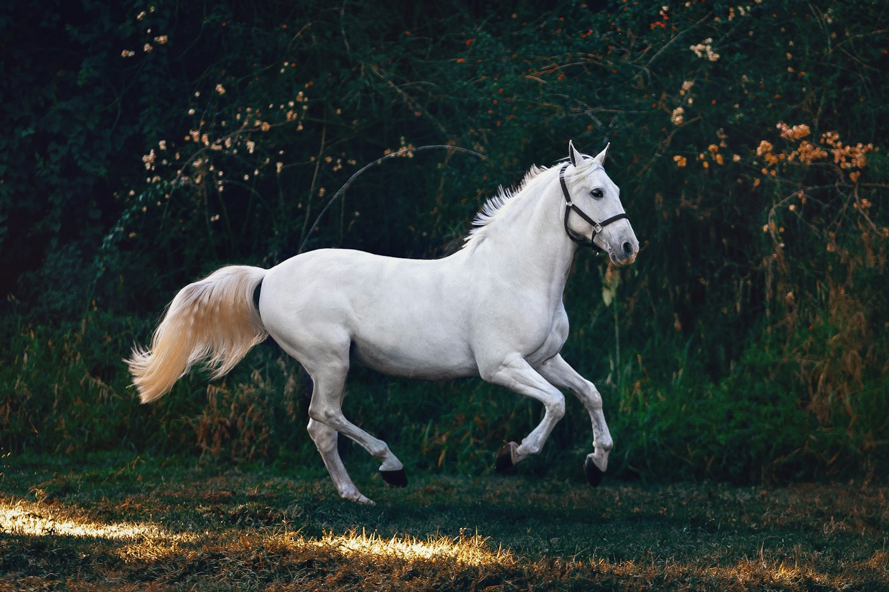
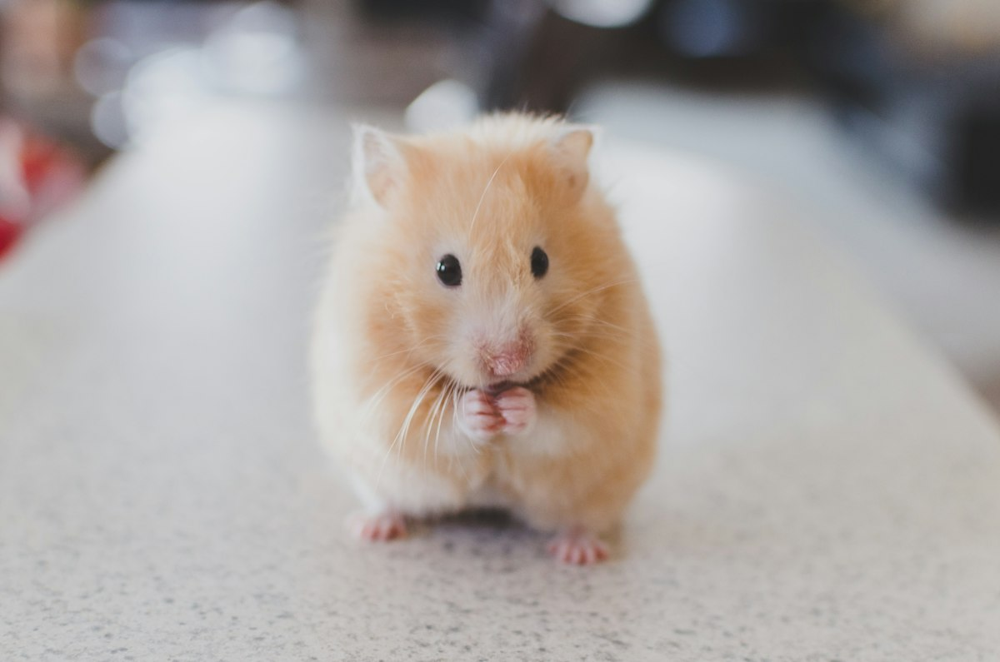
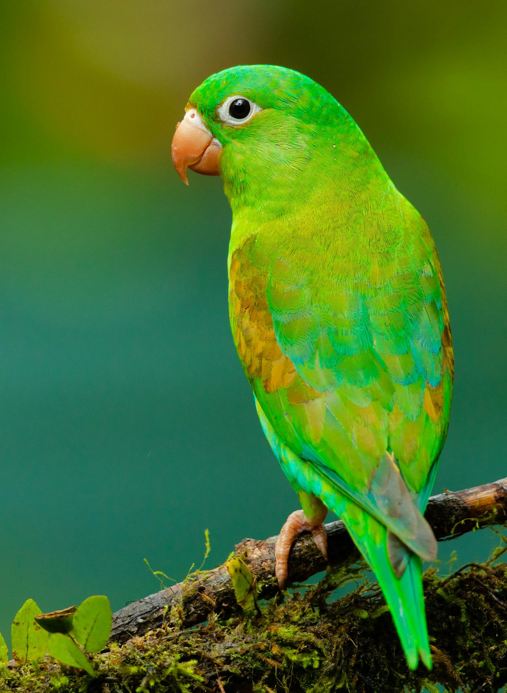
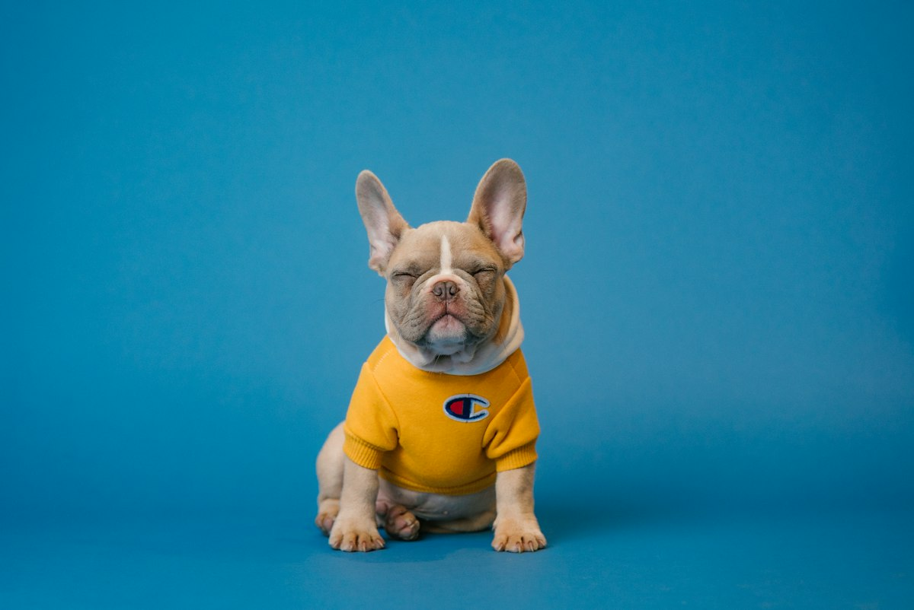

Moderering før publisering
Nye annonser, artikler og opplevelser går til godkjenning. Avslag kommer med begrunnelse — du kan rette og sende på nytt.
DyreHjelpen · iOS & Android
Nabolaget for dyr. Finn savnede, del observasjoner, omplasser ansvarlig, få lokal hjelp — og støtt veterinærregninger når det haster.
Savnet, funnet, tipset eller spørsmål — med bilde og sted.
Teamet ser over innlegget. Du får push når det er klart.
Feed, kart og chat kobler deg til dem som kan hjelpe.
Likes, kommentarer, direkte meldinger — og spleis ved behov.
Savnet & funnet
Meld savnet med bilde, kjennetegn og sted. Naboer kan dele observasjoner og funn — så eiere og hjelpere møtes raskere enn i tilfeldige Facebook-tråder.
Kart & nærhet
DyreHjelpen er bygget for nabolaget: se saker nær deg, filtrer på avstand, og del posisjon når du vil — uten å blottlegge mer enn nødvendig.

Community
Ikke bare kriser. Del gleden, still spørsmål, skriv tips — og vis video når det forteller historien bedre. Smart startside samler kategoriene så feeden føles levende, ikke rotete.

Omplassering & pass
Omplassering krever ærlig helse- og temperamentinfo. Appen veileder med alder, ventetid hos eier og artsspesifikke tips — så dyret får et tryggere hjem.

Veterinærspleis
Start en spleis for behandling, del historien, og la nabolaget bidra. Bidrag håndteres trygt — med tydelig status og moderering der det trengs.

Alle dyr




Nye annonser, artikler og opplevelser går til godkjenning. Avslag kommer med begrunnelse — du kan rette og sende på nytt.
Apple, Google og Vipps — uten passord du må huske.
Du styrer hva du ser. Vi følger opp alvorlige saker.
Privat dialog mellom eier og hjelper — uten å dele telefon offentlig.
Varsler for chat, godkjenning, likes og lokal aktivitet.
Full sletting i appen — inkludert tilknyttede data etter rutinene våre.
Verifiserte veterinærer kan synliggjøres for rådgivning i community.
Hele grensesnittet på bokmål — bygget for Norge.
Savnede dyr, skaderde dyr og akutte situasjoner skjer i vanlige nabolag — ikke bare i organisasjoner med døgnåpen bemanning. Facebook-grupper og tilfeldige meldinger fungerer dårlig når du trenger bilde, sted, filter og trygg kontakt på ett sted.
DyreHjelpen samler kart, feed, chat, omplassering, pass, utstyr og veterinærspleis i én app. Vi prioriterer norsk kontekst: Vipps-innlogging, tydelig språk, dyrevelferdstips og moderering før noe blir synlig for alle.
Akutt-saker og savnet skal være raske å opprette. Samtidig er det plass til glede: opplevelser, tips og spørsmål som gjør communityen levende mellom krisene.
Flutter-app for iOS og Android, backend med Supabase (auth, database, lagring, RLS), push via FCM/APNs, og kart for lokal oppdagelse. Personvern og vilkår er publisert her på hazher.no for App Store Connect og Google Play.
Offisielle URL-er — lim inn i App Store Connect og Play Console.
https://www.hazher.no/DYREHJELPEN/Support/
https://www.hazher.no/DYREHJELPEN/Privacy/